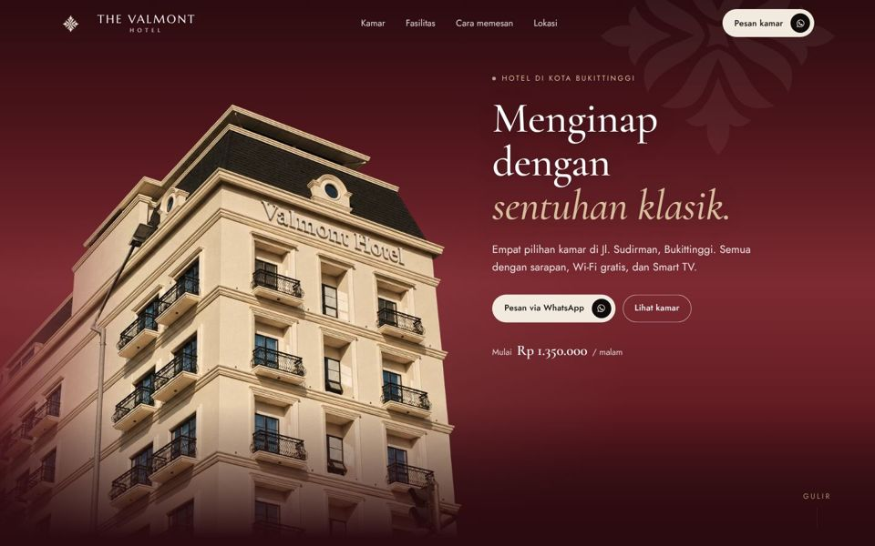
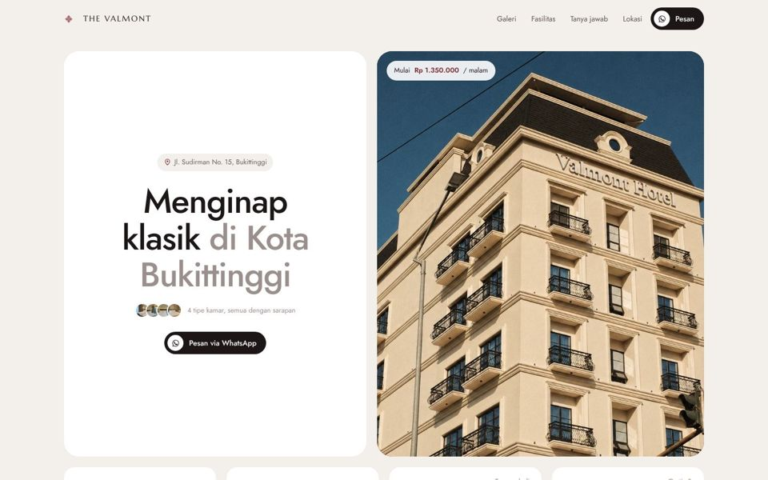

THE VALMONTHOTEL
Draf website, dua pilihan desain
Silakan dibuka dan dicoba langsung di HP: digulir, ketuk tombol, dan lihat animasinya. Setelah itu, pilih desain yang paling disukai.

OPSI A
Klasik dan elegan
Nuansa marun gelap, gedung hotel tampil besar di awal, bagian isi berlatar gelap dengan aksen marun.
Buka opsi A →
OPSI B
Terang dan lapang
Kartu putih yang bersih, foto gedung dengan langit biru, galeri kamar, tanya jawab, dan harga di bagian gelap.
Buka opsi B →Semua foto kamar sudah memakai foto asli hotel.
Draf oleh Creaplin · belum website resmi